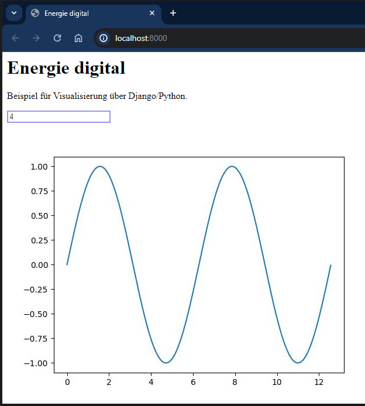

Visualisierung 1
Um entscheiden und handeln zu können sind Informationen notwendig. Berechnungen oder Modellierungen generieren Informationen in der Regel als Diagramm. Dies ist es was wir mit einer Visualisierung machen; ein Diagramm und noch ein erklärender Text hinzu, nicht zu viel aber ein bisschen macht Sinn.
Denken wir an Energiemonitoring, so sollte die Visualisierung günstig sein, d.h. kein zusätzlicher Bildschirm und PC um den Zählerstand darzustellen. Das günstigste Display ist dies, welches wir bereits dabei haben, das Mobil oder ein Notebook.
Deshalb bauen wir nicht ein eigenes GUI (Graphical User Interface), sondern erstellen eine Webpage. Auf der Messeinheit (z.B. RaspberryPi) läuft ein Server, welcher die Information als Webpage darstellt. Mit dem Mobil oder dem Notebook wird dieser Server "angesurft", welcher die Informationen als Webpage über einen Browser darstellt.
Dabei ist neben der eigentlichen Information, die Darstellung der Webpage wichtig um eine gute Lesbarkeit auf unterschiedlichen Endgeräten (PC, Notebook, Smartphone) zu erreichen. Dies wird als Responsiv Design bezeichnet.

Leitsatz
Das Bauen einer Website kann zu einer sehr aufwändigen Sache werden, vor allem wenn wir uns in der Gestaltung verlieren. Deshalb ist ein Leitsatz wichtig Konzentration auf das Wesentliche: Was ist die Kernaussage der Webpage? Design wird "zugekauft"
Hierfür nimmt man Papier und Bleistift um die Kernaussage zu skizzieren. Eine Verschriftlichung der Kernaussage ist sehr empfehlenswert! Auch hier zählt: Weniger ist mehr. Ein Konzept mit mehr als einem A4 Papier muss nochmals überarbeitet werden.
Um bei den Webfunktionalitäten nicht alles von Grund auf zu entwickeln verwenden wir ein Webframework. Ein geschriebener Code sollte mehrmals für unterschiedliche Webpages einsetzbar sein. Dieses Prinzip wird als "Don't repeat yourself (DRY)" bezeichnet. Wenig neugeschriebenen Code heisst auch weniger Fehlermöglichkeiten, bessere Wartbarkeit, weniger Abhängigkeiten.
Webframework
Ein Webframework ist ein Baukastensystem mit einer Vielzahl nützlicher Werkzeuge wie Benutzerverwaltung, Formulare, Upload von Dateien und einen integrierter Entwicklungsserver um die Webpage schnell und einfach darzustellen. Die Teile dieses Baukastensystems können einmal erstellt, für unterschiedliche Anwendungen eingesetzt werden.
Der erste Schritt hierzu ist die Auftrennung von Information und der Darstellung, wodurch beide Blöcke unabhängig voneinander wieder verwendbar sind. Dieselbe Darstellung mit anderen Informationen oder dieselben Informationen bei unterschiedlicher Darstellung.

Als Webframework verwenden wir Django basierend auf Python. Dieses Framework wird bei hunderten von Webpages eingesetzt wie Youtube, Dropbox, Google, Netflix, Spotify, Pinterest, NASA, u.v.m. Der Untertitel von Django heisst "The web framework for perfectionists with deadlines" und zeigt die Stärken von Django, wie:
Schnell umsetzbar mit wenig Code
Sicherheit inbegriffen
Skalierbar
Vielfach erprobt und bewährt
Django ist benannt nach dem französischen Gitarristen Django Reinhardt.

Architektur Django
Die Architektur von Django teilt die Darstellung (Template) von den Informationen (Model), welche, je nach Anfrage (request) unterschiedlich zusammengebaut (View) werden. Das Konzept wird als MTV bezeichnet für Model, Template, View und ist eine lose gekoppelte Struktur, sodass einzelne Teile wiederverwendet werden können.

Views
Die Views ist die Programmeinheit bei Django, welche die Webpage zusammenbaut und darstellt, deshalb views. Hier werden auch die Anfragen (request) behandelt und die Webadresse geprüft.
In der allgemeinen Literatur wird das Django-MTV-Modell häufiger als MVC-Modell bezeichnet für Model, View, Control. Hier entspricht View dem Django-Template und Control der Django-Views.
Template
Das Template beinhaltet die Darstellung, das Design der Webpage. Dieses Template werden wir nicht bauen, sondern fertig beziehen. Beispiel für eine Quelle ist www.html5up.net/eventually.
Models
Unter Models werden die Informationen verstanden. Diese werden als Daten in einer Datenbank abgelegt. Um auf die Daten zugreifen zu können sind Datenbankabfragen wie z.B. SQL notwendig, welche kompliziert sind und Django soll jedoch einfach und schnell umsetzbar sein. Deshalb wird die Information als ein "Model" definiert umso auf die Daten zugreifen zu können unabhängig der Datenbankstruktur im Hintergrund. Modelle werden wir in diesem Tutorial nicht behandeln.
DjangoGirls
Dieses Tutorial baut auf dem sehr empfehlenswerten Tutorial von DjangoGirls auf, welches in vielen Sprachen verfügbar ist. Nach eigenem durcharbeiten von Videos, Bücher, Webpages für einen Django-Einstieg bietet DjangoGirls den flüssigsten Einstieg in Django.
1. Lokales Django-Projekt erstellen
Als Entwicklungsumgebung verwenden wir PyCharm Professional von JetBrains, dies ist das Ideale Werkzeug für Python allgemein und vor allem Webanwendungen. Dies Installation führen wir über den ANACONDA.NAVIGATOR durch. Für OST-Studierende fallen keine Kosten an.
Wir erstellen ein Webpage-Projekt auf der nur eine Anwendung (App) läuft, ein Diagramm mit einer Sinusfunktion, dabei kann die Anzahl Perioden eingegeben werden und anschliessend wird ein Diagramm erstellt mit der Sinusfunktion.

Wir öffnen PyCharm und legen ein neues Django-Projekt an mit dem Namen energieDigital, PyCharm legt nun das Django-Projekt an.
Nun gehen wir in PyCharm auf die auf die manage.py-Console (unter Tools) und geben dort startapp visual. PyCharm ruft nun Django auf, welche eine definiert Ordnerstruktur anlegt mit vordefinierte Dateien. Somit weiss Django wo welche Informationen, Funktionen und Daten liegen, ohne dass wir dieses genauer angeben müssen. Siehe in PyCharm im linken Fenster die Ordnerstruktur an.
Nun machen wir die Einstellungen in settings.py. Bei "ALLOWED_HOSTS" ergänzen wir den url-Namen unserer Seite. Wir verwenden den localhost (oder '127.0.0.1'), da wir mit dem Entwicklungsserver arbeiten.
ALLOWED_HOSTS = ['localhost', 'www.meineSeite.ch']
Nun können wir unsere Webpage starten mit der grünen Pfeiltaste rechts oben.
Auf der Console erscheinen folgende Zeilen. Es wird der Django-Entwicklungsserver (development server) gestartet und auch die url-Adresse unserer Webpage ist angegeben. Diese geben wir im Browser ein und wir können unsere Seite ansehen.
x>>python manage.py runserverWatching for file changes with StatReloaderPerforming system checks...System check identified no issues (0 silenced).Django version 2.2.5, using settings 'energieDigital.settings'Starting development server at http://localhost:8000/Quit the server with CTRL-BREAK.
Gratulation! Webserver gestartet und die Seite wird angezeigt.

Nun ist dies die "Standardseite" welche Django liefert.
2. Eigene App
Wir bauen nun aber unsere eigene App. Django orientiert sich an Ordnernamen und sucht das html-Template im Ordner "templates", d.h. wir legen im visual-Ordner einen Unterordner templates an und zusätzlich static welcher wir später brauchen.
Die Ordnerstruktur sieht nun wir folgt aus:
xxxxxxxxxxenergieDigital├── energieDigital└── visual├── templates└── static
html-Template
In diesem Ordner erstellen wir eine neue Datei sinus.html.
xxxxxxxxxx{% load static %}<html> <head> <title>Sinus</title> </head> <body> <form method="post" enctype="multipart/form-data"> {% csrf_token %} <input type="number" name="nB2S" value=3> <br> <img src="{% static "sinus.jpg" %}"> <form> </body></html>Im html-Code sind zwei Django-Kommandos eingebaut:
{% csrf_token %} Dies ist eine Sicherungsfunktion von Django, die Cross Site Request Forgery protection. Bei einer Server-Anfrage (request) wird hier ein csrf-Code mitgeschickt. Wenn später über "post" Daten vom Browser zum Server gesendet werden, so wird dieser csrf-Code mit gesendet und der Server, weiss dann, dass die erhaltenen Daten sicher sind.
{% load static %} Hier wird der Pfadname geladen, wo die statischen Dateien liegen. Das Diagramm wird als Grafikdatei sinus.jpg im Ordner static abgelegt.
Nun funktioniert unsere Seite noch nicht. Es fehlen noch zwei Punkte:
Bei der Eingabe der url soll eine Funktion aufgerufen werden, welche die Seite erstellt. Der Aufruf wird in der urls.py definiert.
Die Funktion selbst, welche die Seite erstellt wird in der Datei views.py definiert. Dort läuft unserer Python-Code.
3. Erste Seite
Wir wollen eine App "sinus" erstellen mit dem url: localhost:8000/sinus. Diese Seite soll ein Eingabefeld für eine Zahl haben. Diese Zahl gibt an wieviel Sinuszyklen in einem Diagramm gezeichnet werden sollen. Diese Zahl wird vom Browser zum Server gesendet. Dort wird in python die "sinusfunktion" aufgerufen und mit matplotlib ein Diagramm erstellt und als sinus.jpg-Datei abgespeichert. Anschliessend überarbeitet der Server die html-Webpage, sodass das Diagramm enthalten ist und sendet diese zurück zum Browser, wo das Bild sinus.jpg dargestellt wird.
Unter url versteht man die Internetadresse (Uniform Resource Locator). Wir verwenden den lokalen Django-Entwicklungsserver, welcher die Standardadresse "localhost:8000" verwendet, wir wollen jedoch "localhost:8000/sinus", welches wir in der urls.py angegeben wird. Öffne die energieDigital/urls.py-Datei und passe den Code an.
xxxxxxxxxxfrom django.contrib import adminfrom django.urls import pathfrom visual import views
urlpatterns = [ path('sinus/', views.sinusfunction), path('admin/', admin.site.urls),]Wenn diese Adresse beim Server ankommt wird die Python-Funktion "sinusfunktion" ausgeführt. Diese erstellen wir in der Datei views.py, welche wir noch neu anlegen müssen. Von views importieren wir die "sinusfunktion".
Nun definieren wir die sinusfunktion in views.py. Hier speichern wir die sinus.jpg-Datei im Ordner "static", damit das html-Template die Datei später findet. Mit der Funktion "render" aktualisieren wir die "sinus.html". Hier bauen wir mit {{ nS2B }} dynamische Daten ins html ein. "nS2B" steht für Anzahl Zyklen von Server zum Browser. Die Variablennamen findest du auch im sinus.html.
xxxxxxxxxx# -*- coding: utf-8 -*-from django.shortcuts import renderimport numpy as npimport matplotlib.pyplot as plt
def sinusfunction(request): if request.POST: # wenn "Enter" gedrückt wird dic = request.POST # Werte von Page übernehmen print('mal sehen was das ist: ' + str(dic)) nCycle = int(dic['nB2S']) else: nCycle = int(0)
x = np.linspace(0,2*3.14*nCycle,1000) y = np.sin(x) filename = 'static/sinus.jpg' plt.plot(x,y) plt.savefig(filename) plt.clf() # Figure-Objekt schliessen return render(request, 'test.html', {'nS2B': nCycle})Nun haben wir einiges angepasst. PyCharm erkennt Änderungen in den Dateien und startet den Webserver neu. Wir können nun die Webpage öffnen mit https://localhost:8000/sinus.
4. Erweiterung
Wir erweitern das Beispiel:
Als url definieren wir nur die Hauptadresse (ip-Adresse) ohne "/sinus"
Das Diagramm wird als html-Code direkt ans Template übergeben mit bokeh
Wir verwenden ein fertiges Template von html5up
In urls.py ergänzen wir wie folgt:
xxxxxxxxxxurlpatterns = [path('', views.chart),path('test/', views.testfunction),path('admin/', admin.site.urls),]
In views.py schreiben wir den Code zur Darstellung der Sinusfunktion als Funktion 'chart' in welche der Sinus berechnet wird und das Bokeh-Diagramm erzeugt wird.
xxxxxxxxxxfrom django.shortcuts import renderfrom bokeh.plotting import figurefrom bokeh.embed import componentsimport numpy as np
def chart(request): if request.POST: # wenn "Enter" gedrückt wird dic = request.POST # Werte von Page übernehmen print('mal sehen was das ist: ' + str(dic)) nCycle = int(dic['nCycle']) else: nCycle = int(1)
x = np.linspace(0,100,100) y = np.sin(x/100*2*3.1415*nCycle) p1 = figure(plot_width=460, plot_height=200) p1.line(x, y) p1.toolbar.logo = None
script, div = components(p1) # hier wird html-Code erzeugt chart = script + div return render(request, 'home.html', {'nCycle': nCycle, 'chart': chart})
Als nächstes erstellen wir eine Datei home.html. Dies ist die vereinfachte Version vom Template "Eventually" by HTML5up :
xxxxxxxxxx<!-- Eventually by HTML5 UP -->{% load static %}<html> <head> <title>Energie Digital</title> <meta charset="utf-8" /> <meta name="viewport" content="width=device-width, initial-scale=1, user-scalable=no" /> <link rel="stylesheet" href="{% static "assets/css/main.css" %}" /> <!-- BOKEH x.y.z durch die aktuelle Version ersetzen --> <script src="https://cdn.bokeh.org/bokeh/release/bokeh-x.y.z.min.js"></script> </head> <body class="is-preload"> <!-- Header --> <header id="header"> <h1>Energie Digital</h1> <p>Programmierbeispiel im CAS Energie digital zu Visualisierung mit Django</p> </header> <div style="background-color:rgba(0,0,0,0.5);padding: 20px"> <form method="post" enctype="multipart/form-data"> {% csrf_token %} <input type="number" step = 1 min = 1 max = 20 name="nCycle" value={{ nCycle }} style = color:blue> {{ chart|safe }} <br> <!-- Diagramm als jpg-Datei, erzeugt über Matplotlib --> <!-- und im Ordner static abgelegt --> <img src="{% static "sinus.jpg" %}" width = 460/> <form> </div> <!-- Scripts --> <script src="{% static "assets/js/main.js" %}"></script> </body></html>Diese referenziert auf css-Dateien und js-Dateien von diesem Template. Diese werden im Ordner static abgelegt, dem Ort wo Django standardmässig diese Dateien sucht. Lade das Template "Eventually" und speichere die beiden Ordner imagesund assets in den Ordner static. Die Ordnerstruktur sieht nun wir folgt aus:
xxxxxxxxxxenergieDigital├── energieDigital└── visual├── static│ ├── images│ └── assets└── templates
Öffne die Datei static/assets/js/main.js mit dem Editor. Dort siehst du den Verweis auf die Hintergrundbilder 'images/bg01.jpg': 'center',. Passe den Verweis an, wie folgt, da Django vom Projektverzeichnis ausgeht und unter static suchen soll:
xxxxxxxxxximages: { 'static/images/bg01.jpg': 'center', 'static/images/bg02.jpg': 'center', 'static/images/bg03.jpg': 'center'},Speichere im images-Ordner deine gewünschten Hintergrundbilder mit obigen Namen.
Nun haben wir in views.py ein bokeh-Diagramm erstellt als html-Code.
5. Zusammenfassung
Die View-Model-Template Architektur von Django sieht nun wie folgt aus:

Die Dateistruktur zeigt sich wie folgt:
xxxxxxxxxxenergieDigital├── energieDigital│ ├─settings.py│ └─urls.py└── visual├── static│ ├── assets...│ └── images...│├── templates│ └─home.html└─views.py
Dieses Tutorial wurde für den Unterricht CAS Energie digital erstellt. Markus Markstaler 2024.